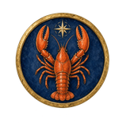
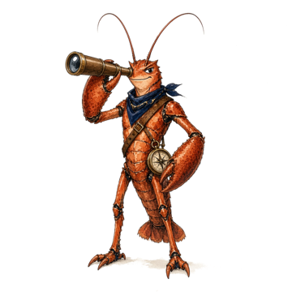
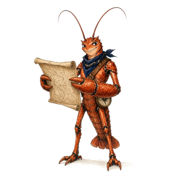

LobsyExpeditie · DNA-paspoort
Jij bent in evenwicht: soms stil, soms actief. Je zoekt uit hoe iets werkt en helpt anderen graag. Belangrijk voor jou: zelf kiezen wat je doet. Je voelt je thuis op een plek waar je zelf mag kiezen. Je houdt van dieren en tekenen.

Je zorgt elke dag voor dieren: eten geven, verzorgen en kijken of ze gezond zijn.
Je helpt dieren beter te worden. Je onderzoekt wat er mis is en werkt met mensen die zorgen.
Je onderzoekt hoe planten en dieren leven, buiten in de natuur of in een lab.
Ga samen naar een kinderboerderij of dierenasiel en vraag wat de verzorgers doen.
Vraag wat het leukst was. Er is geen goed of fout!